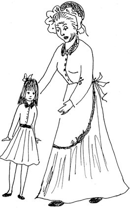

Jučer digla baka
Yesterday Grandma Held Her Head High

Jučer digla bakačelo do oblaka,u srcu joj buktistalna radost jaka.
Yesterday Grandmaheld her head sky-high;in her heart there blazesa joy that won't die.
S unukom se bakaprošetala malo,do te divne šetnjebaki puno stalo.
Grandma took a stroll,her grandchild in tow;that lovely little walkmeant so much, you know.
Što bi sada onada unuka nema?Ostala bi bakau kući da drijema.
What would Grandma dowithout her grandchild, say?She'd just stay at homeand doze the day away.
Oj, unuče moje,bakino veselje,samo reci, dušo,baki svoje želje.
Oh, my little grandchild,Granny's joy and cheer,just tell your granny, darling,all your wishes here.
Sve što si poželišbaka će ti dati,sve na ovom svijetuk'o rođena mati.
Everything you wishGranny will give you,all in this whole world,as your own mother would do.
Unuče je bakidio njene sreće,unuče je bakibogatstvo najveće.
A grandchild is to Grandmaa part of all her bliss;a grandchild is to Grandmathe greatest wealth there is.